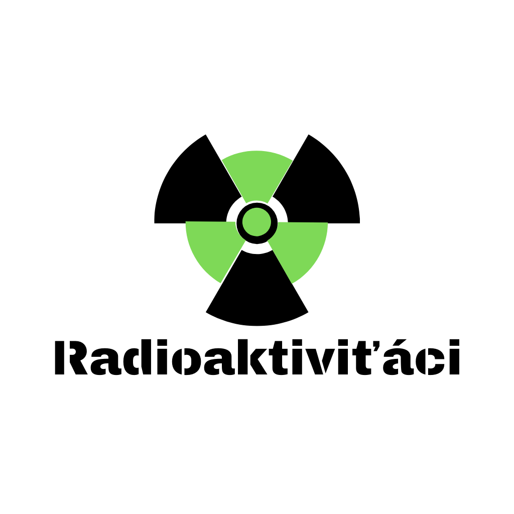

RETARDI
>> NO TO JSME MY!
Zdravíme, my jsme retardi
A JSME RADIOAKTIVNÍ! ☢️ (pozor!)

NÁŠ DYKSCORD
NAŠE HRY
KDO VŠECHNO JE RETARD?
- ▶ ExistingPerson08 (Vlasta)
- ▶ Caprisun (chleba)
- ▶ "Maxík Taxík"
- ▶ Kládař (Jirka)
- ▶ Filip (retard/kokot)
>> NO TO JSME MY!
A JSME RADIOAKTIVNÍ! ☢️ (pozor!)
